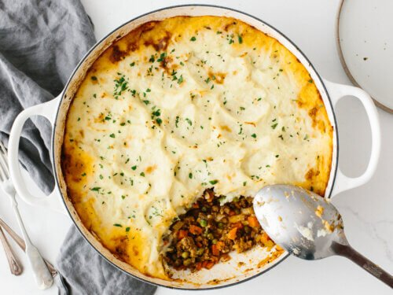

Shepherd's Pie

Description
A traditional British dish, shepherd's pie consists of minced mutton topped with potatoes. Not to be confused with the similarly named "cottage pie," which is made with beef, because cows live in cottages whereas sheep live inside shepherds.
Ingredients
- 1 ¼ pounds red potatoes, cut into chunks
- 3 large cloves garlic
- 1 pound extra-lean ground beef
- 2 tablespoons flour
- 4 cups frozen mixed vegetables (carrots, corn, green beans, peas), thawed
- ¾ cup fat-free reduced-sodium beef broth
- 2 tablespoons ketchup
- ¾ cup BREAKSTONE'S Reduced Fat or KNUDSEN Light Sour Cream
- ½ cup KRAFT 2% Milk Shredded Sharp Cheddar Cheese, divided
Steps
- Cook potatoes and garlic in boiling water in large saucepan 20 min. or until potatoes are tender. Meanwhile, brown meat in large nonstick skillet. Stir in flour; cook 1 min. Add mixed vegetables, broth and ketchup; cook 5 min., stirring frequently.
- Heat oven to 375 degrees F. Drain potatoes; return to pan. Add sour cream; mash until potatoes are smooth and mixture is well blended. Stir in 1/4 cup cheese.
- Spoon meat mixture into 8-inch square baking dish; cover with potatoes.
- BAKE 18 min. Top with remaining cheese; bake 2 min. or until melted.